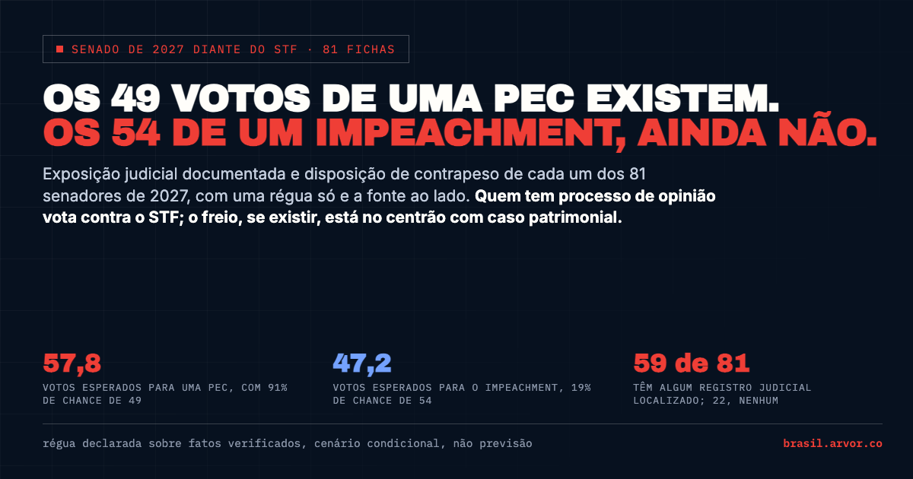

7 de outubro de 2026

Os 49 votos de uma PEC existem. Os 54 de um impeachment, ainda não.
Partimos de um post de Andreza Matais ("ninguém vai mexer em quem pode picar") e fomos conferir, senador por senador: que processo cada um tem, em que estágio, com que relator, e o que cada um já disse ou votou sobre o Supremo. Uma régua única dá a cada um dos 81 um score de exposição judicial e um de contrapeso, separados para PEC e para impeachment, em governo Flávio e em governo Lula. A simulação dá 57,8 votos esperados para uma PEC e 47,2 para o impeachment de Moraes. O achado que contraria a hipótese: quem tem processo de opinião está entre os votos mais prováveis contra a Corte. O freio, se existir, mora no centrão com caso patrimonial, e a página nomeia quem é.